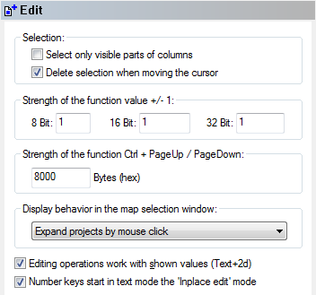

|
The dialog Configuration / Miscellaneous / Edit (Menu Miscellaneous) |

  
|
|
The dialog Configuration / Miscellaneous / Edit (Menu Miscellaneous) |
|

Miscellaneous parameters may be configured in the last sheet:
Select only... |
If activated, column selections work only in the visible area. |
|
Delete selection... |
If activated, any change in the cursor position, will remove the current selection unless you’re currently changing the selection. This option is useful if you’re working without a mouse. |
|
Strength... value... |
Every time you press the + or - key, the current value is changed. Use these fields to configure how much the value should be changed. It can be configured for the different possible bit widths. |
|
Strength... PageUp... |
You may use the keys Ctrl+PageUp and Ctrl+PageDown to jump a large block with the cursor. The size of this block (in bytes) may be configured here. This is for example useful if the interesting parts within a project a exact 8000 bytes apart. |
|
Display behaviour.. |
If you have many projects with many maps, the map selection window can get rather full. You can tell WinOLS to 'expand' (= show all maps) only selected projects or only the current project. |
|
Editing operations... |
When activated, the edit relative function will not work on the eprom data, but on the shown data (which may be different because of factor and offset). Furthermore the + and - function will not increase / decrease the eprom value by one, but try to increase the last digit. If that is not possible because the change would be too small, the eprom value will be changed by 1. |
|
Number keys... |
If this option is active, you can edit values simply by hitting a number key (0-9) in text mode. If the option is not active you have to hit the 'Enter' key before you can enter a new value. |
|
Shortcuts
| Symbol bar: |
| Keyboard: | F12 |